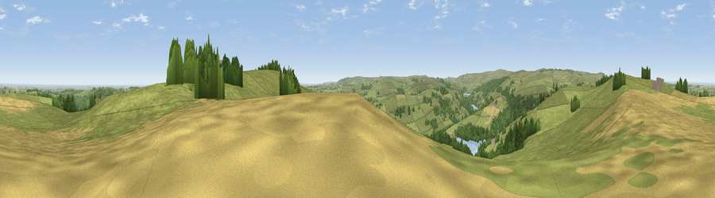

Viewpoint near High Bradfield
#6850 in England · top 4% of its area beats it · near High Bradfield · access?Where it is
The exact computed spot (SK 27275 93375). Click the marker for map links.
Public access: no public right of way or access land is recorded at this exact spot — it may be on private land. Computed from Natural England's CRoW access layer and OpenStreetMap rights of way — not the legal definitive map. Always verify locally.
The view, rendered

A 360° render of this exact spot computed from the terrain model, tree cover and land cover — summer colours, afternoon light, calibrated against photographs of famous viewpoints. Real trees, hedges and buildings will differ in detail.
The panorama
Grey silhouette: terrain skyline in each direction (720 bearings, Earth curvature and refraction included). Dashed green: skyline with trees (+15 m) and buildings (+8 m) as obstacles. Blue strip: how far the ground is visible on each bearing.
Where the view opens
Wedge length = distance to the farthest visible ground on that bearing (vegetation-aware). Rings at 10, 25 and 50 km.
What fills the view
69% grassland · 15% cropland · 13% woodland · 1% water ·
Angular shares of the visible panorama (visual magnitude), not map area. Landscape diversity 0.40 (0–1 Shannon).
Key numbers
More beautiful places nearby
The staircase of upgrades: each row has a higher view potential than everything closer. Driving times are estimates from straight-line distance, calibrated against real road routing — check an actual route before setting out.
| Place | Direction | Drive | Score |
|---|---|---|---|
| Edge Mount | SE · 1 km | ~2 min | 70.2 |
| West Nab | NW · 1 km | ~3 min | 71.7 |
| Viewpoint near Wharncliffe Side | NE · 5 km | ~11 min | 75.2 |
| Viewpoint near Greenfield | WNW · 29 km | ~45 min | 76.0 |
| Wild Bank | W · 29 km | ~45 min | 76.2 |
| Viewpoint near Carrbrook | WNW · 29 km | ~46 min | 77.1 |
| Viewpoint near Otley | N · 51 km | ~73 min | 77.5 |
| Viewpoint near Mow Cop | SW · 54 km | ~76 min | 78.9 |
53.43645, -1.59091 · source: screening · position refined by local search. Computed location — check access rights before visiting.